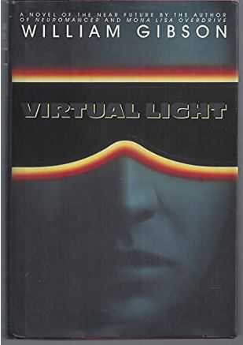

Virtual Light
Published Date: 1993
Author: William Gibson
Genre: Science Fiction
Abstract:As in his previous novels, Gibson's plot is very simple. Chevette Washington, a bicycle courier, impulsively steals a pair of ``virtual light'' glasses that feeds images directly to the optic nerve, not realizing that it contains extremely valuable secret data that its owners will stop at nothing to recover. Rent-a-cop Berry Rydell loses his job due to a hacker's prank, so he teams up with Lucius Warbaby to track the stolen shades, only slowly realizing that Warbaby and his former employers are tied in with the evil corporate scheme revealed by the glasses.